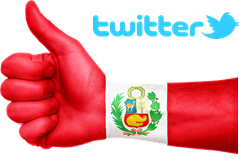

<div id="single-portfolio">
	<div id="portfolio-details" class="container">
		<a class="close-folio-item" href="#"><i class="fa fa-times"></i></a>
		<!--<div class="folio-image">
              
        </div>-->
		<div class="row">
			<div class="col-sm-9">
				<div class="project-info">
                    <h3>Elecciones Perú 2016 - Debates Presidenciales</h3>
                    <p align="justify">Las elecciones presidenciales de Perú se realizarán este 10 de abril. Sabemos quiénes son los candidados. Conocemos sus propuestas, conocemos qué figuras públicas los apoyan. Sabemos hasta sus metidas de pata durante la semana. Pero, ¿sabemos qué es lo que opinan los electores en las redes sociales sobre ellos? No lo sabemos!</p>
                    <p align="justify">El objetivo de este proyecto consiste en saber qué nos dice Twitter de los candidatos. Por medio de métodos automáticos, este proyecto busca analizar el sentimiento de los tweets que son publicados mencionando a los candidatos presidenciales. Estos tweets podrán ser clasificados como positivos, negativos o neutros, según la opinión contenida en el texto del tweet. </p>
                    <p align="justify">Si quieres saber cómo fue calificada la participación de los candidatos a la presidencia del Perú en el <a href="elecciones/index.html" target="_blank">primer</a>, <a href="elecciones/debate2.html" target="_blank">segundo</a> y <a href="elecciones/debate3.html" target="_blank">tercer</a> debate, haz clic en los enlaces.</p>
                    <!-- target="_blank"-->
                </div>
			</div>
			<div class="col-sm-3">
				<div class="project-details">
					<h3>Detalles</h3>
					<p><span>Estado: </span> Abierto</p>
					<p><span>Fecha:</span> 3 Abril 2016</p>
					<p><span>Tags:</span> Elecciones, Twitter</p>
				</div>  
			</div>
		</div>
	</div>
</div>